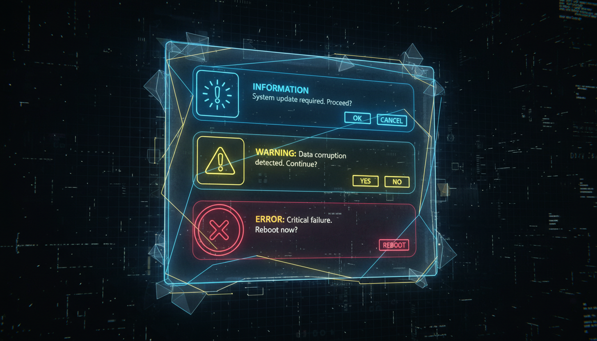

Повідомлення, питання, попередження, типи кнопок

// Просте повідомлення
MessageBox::Show("Операція завершена!");
// Повідомлення з заголовком
MessageBox::Show("Файл збережено.", "Інформація");
// Повідомлення з піктограмою
MessageBox::Show("Ви впевнені?", "Підтвердження",
MessageBoxButtons::YesNo, MessageBoxIcon::Question);
// Обробка відповіді
DialogResult result = MessageBox::Show(
"Зберегти зміни?", "Підтвердження",
MessageBoxButtons::YesNoCancel,
MessageBoxIcon::Question);
switch (result) {
case DialogResult::Yes:
SaveFile();
break;
case DialogResult::No:
// Не зберігати
break;
case DialogResult::Cancel:
// Скасувати
return;
}| Buttons | Опис |
|---|---|
| OK | Тільки OK |
| OKCancel | OK та Скасувати |
| YesNo | Так та Ні |
| YesNoCancel | Так, Ні, Скасувати |
| RetryCancel | Повторити та Скасувати |
| AbortRetryIgnore | Скасувати, Повторити, Ігнорувати |